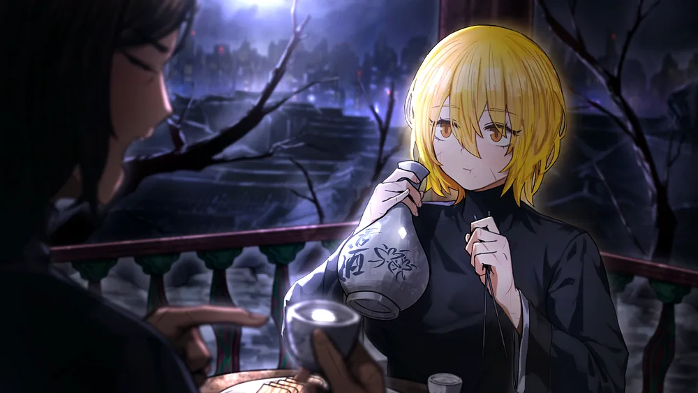

Collective Breathing
When this unit gains Poise Potency using its own Skill or Coin effects: Give 1 Poise Potency to 1 ally that either has no Poise or has the least Poise Potency (max 5 times)

Draw of the Sword
Blade Arc
Fare Thee Well!
Evade
When this unit gains Poise Potency using its own Skill or Coin effects: Give 1 Poise Potency to 1 ally that either has no Poise or has the least Poise Potency (max 5 times)
1 ally that has the least Poise gains 2 more Poise Potency when gaining Poise Potency using its own Skill or Coin effects (max 2 times; does not apply to allies that do not have Poise)
Identity Acquisition
The way of... Wine? Drinking etiquette? Forsooth, I am quite unacquainted with that subject. Kaugh, 't-tis quite bitter!
Morning Greeting
Good morrow to thee! Though the weather may be quite dreary, hm~ This crisp smell of daybreak is quite pleasant, is it not? 'Tis the perfect time for a reconnaissance, indeed!
Afternoon Greeting
Ah, oft do I forgo a midday meal in favor of honing my skills with a blade. Forget that, for I must now narrate the events of my reconnaissance!
Evening Greeting
Mm... I have heard tale of a culture that oft sups alongside an alcoholic beverage, indeed. Yet it ill-fits my temperament... I merely wish to gorge myself on slabs of meaty yukjeon(meat fritter)!
Chatter #1
I wish only to twirl and let my blade sing with abandon! Seldom did I expect me to be forced to learn 'the way of wine'... ... P-prithee, do not let Lady Outis hear of my complaints!
Chatter #2
Sip from a bottle, sip from a cup... what difference does it make? It ends up in my gullet all the same. I am befuddled at why any would focus on a subject so irrelevant from the blade. Fie, I care not for such trifles. Thou must hear of the mischief the Kurokumo Clan is up to.
Chatter #3
Tis my belief that to cut something along the arc of my blade is much more satisfying than indulging in a succulent meal! The sensation of that slight resistance as the blade cuts through the mass... 'tis quite exhilarating, wouldst thou not agree?
Post-Uptie Chat 1
I sensed that we may find ourselves a few unwelcome guests! I deduced it from the untimely stirring, indeed. 'Tis only right that no traveler graces the roads at this time. So I have righted all the wrongs.
Post-Uptie Chat 2
To slice through the air as I train myself in the way of blades, and to hew the deserving ones as I walk the path... there is very little difference. If I were to make a distinction... mm, I must say, the only difference is the weight in my hands.
Idle
'Tis a moonlight most fair... Hath the battle left nicks in my blade...? Whew, not even a speck of dust remains on its edge.
Uptying
Ah, 'twas naught but the noise outside. Wouldst thou mind if I should go on a little stroll to investigate?
Deployment
Hm? Ah, give me but a moment—I must first swallow this...
Stage Entry
I shall scurry there posthaste!
Viewed in Battle
I am quite busy at the moment!
Commencing Attack
How thrilling!
Enemy Stagger
Hm? Aha, I must not have struck true...
Staggered
Uagh!
Enemy Killed
Ah, truly! 'Twas a flesh-splitting sensation!
Death
Aah, haah... Forsooth, well did I expect to be... hewn... myself.
Check Passed
Heigh-ho! I have done it~!
Check Failed
Uh-ahm~ I-I suppose I have made a mistake..
Victory Cry
'Twas naught but a quick jaunt indeed. Now I return with a lighter heart to... where Lady Outis awaits. Drat...
Extra Conditions Fulfilled
I have swung my blade with abandon! Ah, how refreshing, how exhilarating! Now, I may have enough patience to sit through such interminable lectures!
Defeat Wail
A flaw in my techniques... I must have grown complacent. I shall persevere...
Sumber data: Limbus Company Wiki. Angka dan teks mengikuti versi wiki saat situs ini dibangun.